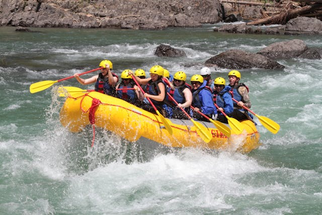
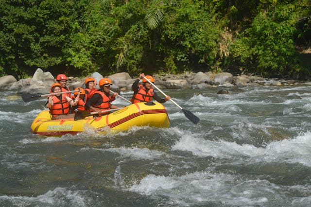
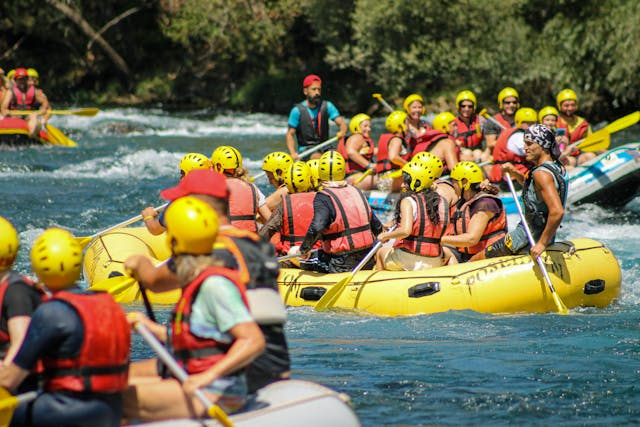
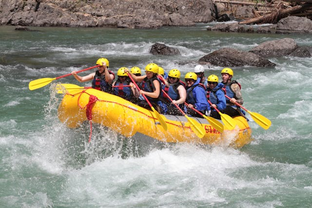
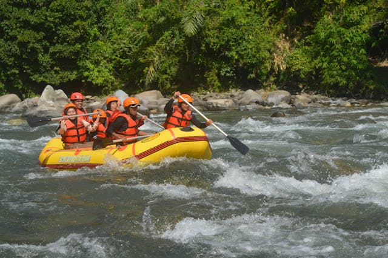
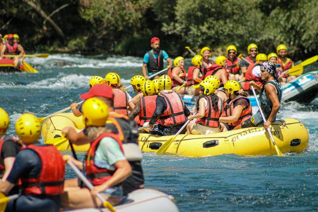

History
Rapids Adventures was founded in 1995 by a group of passionate river enthusiasts who shared a love for white water rafting and a vision to share that passion with others. The company's roots can be traced back to the scenic rivers of the Pacific Northwest, where the founders first honed their rafting skills and discovered the transformative power of river adventures.
In the early years, Rapids Adventures operated as a small, family-run outfit, offering guided rafting trips on local rivers and building a reputation for excellence in safety, service, and adventure. Despite humble beginnings, the company quickly gained recognition for its personalized approach to rafting and commitment to providing unforgettable experiences for every guest.
As word spread about the exceptional quality of Rapids Adventures' trips, the company's reputation grew, attracting visitors from across the country and around the world. With increasing demand for their services, Rapids Adventures expanded its operations, adding new trips on additional rivers and investing in top-of-the-line equipment and facilities to enhance the guest experience.
Over the years, Rapids Adventures has remained true to its founding principles of safety, stewardship, and adventure. The company has continued to innovate and evolve, introducing new trip options, expanding its team of expert guides, and implementing industry-leading safety standards to ensure that every guest enjoys a safe and thrilling rafting experience.
Today, Rapids Adventures is recognized as a leader in the white water rafting industry, offering a wide range of trips on some of the most breathtaking rivers in the region. From scenic floats for families to adrenaline-pumping adventures for thrill-seekers, Rapids Adventures remains dedicated to providing the ultimate river experience for adventurers of all ages and skill levels.
As Rapids Adventures looks to the future, the company remains committed to its mission of sharing the joy and beauty of white water rafting with people from all walks of life. Whether it's your first time on the river or you're a seasoned rafter seeking a new challenge, Rapids Adventures invites you to join them for the adventure of a lifetime.

 




